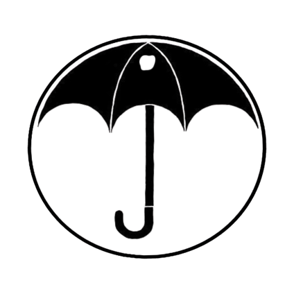

HyperBlog Tu blog de confianza ALV
Este es el título atractivo e interesante del post
Y este es el párrafo de inicio donde vamos a explicar las increíbles cosas que puedes hacer con ramas.

Los blogs son la mejor forma de compartir información y tus ideas. Mucho más que ir a conferencias o salir en YouTube. Excepto si eres un rockstar. Pero estadísticamente no lo eres... por ahora.
Suscríbete y dale like